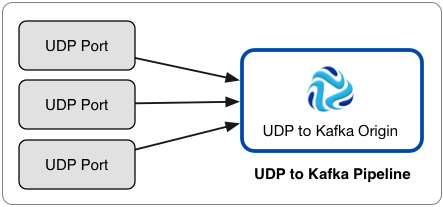

UDP to Kafka (Deprecated)
The UDP to Kafka origin reads messages from one or more UDP ports and writes each message directly to Kafka. However, the UDP to Kafka origin is now deprecated and will be removed in a future release. We recommend using the UDP Multithreaded Source origin that can use multiple threads to enable parallel processing of data from multiple UDP ports.
Use the UDP to Kafka origin to read large volumes of data from multiple UDP ports and write the data immediately to Kafka, without additional processing.
Here is an example of the recommended architecture for using the UDP to Kafka origin:

If you need to process data before writing it to Kafka, need to write to a destination system other than Kafka, or if the origin does not need to process high volumes of data, use the UDP Source origin.
When processing NetFlow messages, the stage generates different records based on the NetFlow version. When processing NetFlow 9, the records are generated based on the NetFlow 9 configuration properties. For more information, see NetFlow Data Processing.
When you configure UDP to Kafka, you specify the UDP ports to use, Kafka configuration information, and advanced properties such as the maximum number of write requests.
You can add Kafka configuration properties and enable Kafka security as needed.
Pipeline Configuration
When you use a UDP to Kafka origin in a pipeline, connect the origin to a Trash destination.
The UDP to Kafka origin writes records directly to Kafka. The origin does not pass records to its output port, so you cannot perform additional processing or write the data to other destination systems.
However, since a pipeline requires a destination, you should connect the origin to the Trash destination to satisfy pipeline validation requirements.
A pipeline with the UDP to Kafka origin should look like this:

Additional Kafka Properties
You can add custom Kafka configuration properties to the UDP to Kafka origin.
When you add a Kafka configuration property, enter the exact property name and the value. The stage does not validate the property names or values.
Several properties are defined by default, you can edit or remove the properties as necessary.
- key.serializer.class
- metadata.broker.list
- partitioner.class
- producer.type
- serializer.class
Enabling Kafka Security
You can configure the UDP to Kafka origin to connect securely to Kafka through SSL/TLS, Kerberos, or both.
Enabling SSL/TLS
Perform the following steps to enable the UDP to Kafka origin to use SSL/TLS to connect to Kafka.
- To use SSL/TLS to connect, first make sure Kafka is configured for SSL/TLS as described in the Kafka documentation.
- On the General tab of the stage, set the Stage Library property to the appropriate Apache Kafka version.
- On the Kafka tab, add the security.protocol Kafka configuration property and set it to SSL.
- Then add and configure the following SSL Kafka
properties:
- ssl.truststore.location
- ssl.truststore.password
When the Kafka broker requires client authentication - when the ssl.client.auth broker property is set to "required" - add and configure the following properties:- ssl.keystore.location
- ssl.keystore.password
- ssl.key.password
Some brokers might require adding the following properties as well:- ssl.enabled.protocols
- ssl.truststore.type
- ssl.keystore.type
For details about these properties, see the Kafka documentation.
For example, the following properties allow the stage to use SSL/TLS to connect to Kafka with client authentication:

Enabling Kerberos (SASL)
When you use Kerberos authentication, Data Collector uses the Kerberos principal and keytab to connect to Kafka. Perform the following steps to enable the UDP to Kafka origin to use Kerberos to connect to Kafka.
- To use Kerberos, first make sure Kafka is configured for Kerberos as described in the Kafka documentation.
- Make sure that Kerberos authentication is enabled for Data Collector, as described in Kerberos Authentication.
- Add the Java Authentication and Authorization
Service (JAAS) configuration properties required for Kafka clients based on your
installation and authentication type:
- RPM, tarball, or Cloudera Manager installation without LDAP
authentication - If Data Collector does
not use LDAP authentication, create a separate JAAS configuration file
on the Data Collector
machine. Add the following
KafkaClientlogin section to the file:KafkaClient { com.sun.security.auth.module.Krb5LoginModule required useKeyTab=true keyTab="<keytab path>" principal="<principal name>/<host name>@<realm>"; };For example:KafkaClient { com.sun.security.auth.module.Krb5LoginModule required useKeyTab=true keyTab="/etc/security/keytabs/sdc.keytab" principal="sdc/sdc-01.streamsets.net@EXAMPLE.COM"; };Then modify the SDC_JAVA_OPTS environment variable to include the following option that defines the path to the JAAS configuration file:-Djava.security.auth.login.config=<JAAS config path>Modify environment variables using the method required by your installation type.
- RPM or tarball installation with LDAP
authentication - If LDAP authentication is enabled in an
RPM or tarball installation, add the properties to the JAAS
configuration file used by Data Collector - the
$SDC_CONF/ldap-login.conffile. Add the followingKafkaClientlogin section to the end of theldap-login.conffile:KafkaClient { com.sun.security.auth.module.Krb5LoginModule required useKeyTab=true keyTab="<keytab path>" principal="<principal name>/<host name>@<realm>"; };For example:KafkaClient { com.sun.security.auth.module.Krb5LoginModule required useKeyTab=true keyTab="/etc/security/keytabs/sdc.keytab" principal="sdc/sdc-01.streamsets.net@EXAMPLE.COM"; }; - Cloudera Manager installation with LDAP
authentication - If LDAP authentication is enabled in a
Cloudera Manager installation, enable the LDAP Config File Substitutions
(ldap.login.file.allow.substitutions) property for the StreamSets
service in Cloudera Manager.
If the Use Safety Valve to Edit LDAP Information (use.ldap.login.file) property is enabled and LDAP authentication is configured in the Data Collector Advanced Configuration Snippet (Safety Valve) for ldap-login.conf field, then add the JAAS configuration properties to the same ldap-login.conf safety valve.
If LDAP authentication is configured through the LDAP properties rather than the ldap-login.conf safety value, add the JAAS configuration properties to the Data Collector Advanced Configuration Snippet (Safety Valve) for generated-ldap-login-append.conf field.
Add the following
KafkaClientlogin section to the appropriate field as follows:KafkaClient { com.sun.security.auth.module.Krb5LoginModule required useKeyTab=true keyTab="_KEYTAB_PATH" principal="<principal name>/_HOST@<realm>"; };For example:KafkaClient { com.sun.security.auth.module.Krb5LoginModule required useKeyTab=true keyTab="_KEYTAB_PATH" principal="sdc/_HOST@EXAMPLE.COM"; };Cloudera Manager generates the appropriate keytab path and host name.
- RPM, tarball, or Cloudera Manager installation without LDAP
authentication - If Data Collector does
not use LDAP authentication, create a separate JAAS configuration file
on the Data Collector
machine. Add the following
- On the General tab of the stage, set the Stage Library property to the appropriate Apache Kafka version.
- On the Kafka tab, add the security.protocol Kafka configuration property, and set it to SASL_PLAINTEXT.
- Then, add the sasl.kerberos.service.name configuration property, and set it to kafka.
For example, the following Kafka properties enable connecting to Kafka with Kerberos:

Enabling SSL/TLS and Kerberos
You can enable the UDP to Kafka origin to use SSL/TLS and Kerberos to connect to Kafka.
- Make sure Kafka is configured to use SSL/TLS and Kerberos (SASL) as described in the following Kafka documentation:
- Make sure that Kerberos authentication is enabled for Data Collector, as described in Kerberos Authentication.
- Add the Java Authentication and Authorization
Service (JAAS) configuration properties required for Kafka clients based on your
installation and authentication type:
- RPM, tarball, or Cloudera Manager installation without LDAP
authentication - If Data Collector does
not use LDAP authentication, create a separate JAAS configuration file
on the Data Collector
machine. Add the following
KafkaClientlogin section to the file:KafkaClient { com.sun.security.auth.module.Krb5LoginModule required useKeyTab=true keyTab="<keytab path>" principal="<principal name>/<host name>@<realm>"; };For example:KafkaClient { com.sun.security.auth.module.Krb5LoginModule required useKeyTab=true keyTab="/etc/security/keytabs/sdc.keytab" principal="sdc/sdc-01.streamsets.net@EXAMPLE.COM"; };Then modify the SDC_JAVA_OPTS environment variable to include the following option that defines the path to the JAAS configuration file:-Djava.security.auth.login.config=<JAAS config path>Modify environment variables using the method required by your installation type.
- RPM or tarball installation with LDAP
authentication - If LDAP authentication is enabled in an
RPM or tarball installation, add the properties to the JAAS
configuration file used by Data Collector - the
$SDC_CONF/ldap-login.conffile. Add the followingKafkaClientlogin section to the end of theldap-login.conffile:KafkaClient { com.sun.security.auth.module.Krb5LoginModule required useKeyTab=true keyTab="<keytab path>" principal="<principal name>/<host name>@<realm>"; };For example:KafkaClient { com.sun.security.auth.module.Krb5LoginModule required useKeyTab=true keyTab="/etc/security/keytabs/sdc.keytab" principal="sdc/sdc-01.streamsets.net@EXAMPLE.COM"; }; - Cloudera Manager installation with LDAP
authentication - If LDAP authentication is enabled in a
Cloudera Manager installation, enable the LDAP Config File Substitutions
(ldap.login.file.allow.substitutions) property for the StreamSets
service in Cloudera Manager.
If the Use Safety Valve to Edit LDAP Information (use.ldap.login.file) property is enabled and LDAP authentication is configured in the Data Collector Advanced Configuration Snippet (Safety Valve) for ldap-login.conf field, then add the JAAS configuration properties to the same ldap-login.conf safety valve.
If LDAP authentication is configured through the LDAP properties rather than the ldap-login.conf safety value, add the JAAS configuration properties to the Data Collector Advanced Configuration Snippet (Safety Valve) for generated-ldap-login-append.conf field.
Add the following
KafkaClientlogin section to the appropriate field as follows:KafkaClient { com.sun.security.auth.module.Krb5LoginModule required useKeyTab=true keyTab="_KEYTAB_PATH" principal="<principal name>/_HOST@<realm>"; };For example:KafkaClient { com.sun.security.auth.module.Krb5LoginModule required useKeyTab=true keyTab="_KEYTAB_PATH" principal="sdc/_HOST@EXAMPLE.COM"; };Cloudera Manager generates the appropriate keytab path and host name.
- RPM, tarball, or Cloudera Manager installation without LDAP
authentication - If Data Collector does
not use LDAP authentication, create a separate JAAS configuration file
on the Data Collector
machine. Add the following
- On the General tab of the stage, set the Stage Library property to the appropriate Apache Kafka version.
- On the Kafka tab, add the security.protocol property and set it to SASL_SSL.
- Then, add the sasl.kerberos.service.name configuration property, and set it to kafka.
- Then add and configure the following SSL Kafka
properties:
- ssl.truststore.location
- ssl.truststore.password
When the Kafka broker requires client authentication - when the ssl.client.auth broker property is set to "required" - add and configure the following properties:- ssl.keystore.location
- ssl.keystore.password
- ssl.key.password
Some brokers might require adding the following properties as well:- ssl.enabled.protocols
- ssl.truststore.type
- ssl.keystore.type
For details about these properties, see the Kafka documentation.
Configuring a UDP to Kafka Origin
Configure a UDP to Kafka origin to process UDP messages and write them directly to Kafka.
-
On the Kafka tab, configure the following
properties:
UDP Property Description Broker URI Connection string for the Kafka broker. Use the following format: <host>:<port>.To ensure a connection, enter a comma-separated list of additional broker URIs.
Topic Kafka topic to read. Kafka Configuration 
Additional Kafka configuration properties to use. Using simple or bulk edit mode, click the Add icon to add properties. Define the Kafka property name and value.
Use the property names and values as expected by Kafka.
For information about enabling secure connections to Kafka, see Enabling Kafka Security.